Multi-agent architecture#
Interview App is three products sharing one agent platform:
- Interview Coach: turns your resume and a job description into a prep pack, runs spoken mock interviews, scores every answer, and adapts what you practise next.
- Meeting Notes: a transparent, consent-gated note-taker in the spirit of Granola. It captures the transcript live, lets you search it and catch up mid-meeting, and writes enhanced notes when you stop.
- Jobs: searches open roles on company job boards through their official public APIs, ranks them against your CV, and prepares each application for your approval. Nothing is sent without you: you approve, and you press Submit yourself.
Everything runs on your PC: FastAPI + SQLite, Ollama on your GPU, local Whisper. Claude is an optional backend. This document defines every agent: what it receives, what it decides, what it passes on, how the system recovers from errors without you touching it, and how it improves over time.
1. Design principles#
- Orchestrated pipelines, not a chat room of agents. Each pipeline is a fixed graph of specialist agents run by
code (
coach/service.py,notes/service.py). Agents never call each other directly. The orchestrator passes typed outputs from one agent to the next. Behaviour stays predictable and testable, and each step can be retried, traced and replaced. That matters most with local 8–14B models. - Typed contracts. Every agent's output is a Pydantic model. The JSON schema is sent to the model (Ollama
format/ Claudeoutput_config.format), then the output is validated before anything downstream sees it. - Always finish. Every agent has a deterministic rule-based fallback, so a pipeline completes even with no model
available. Fallback results are labelled
degradedin the UI. - Deterministic guards around probabilistic models. Code measures speaking pace, filler words and STAR markers, and applies calibration caps, quote verification, user-note preservation and schedule maths. Models do judgment; code does arithmetic and enforcement.
- Human in control, never deceived parties. Practice help exists only in practice sessions. Meetings require consent, show a recording indicator, and never generate answers for you to say live (see RESPONSIBLE_USE.md).


2. The agent contract#
Every agent subclasses Agent (backend/app/agents/base.py) and defines:
| Member | Purpose |
|---|---|
system_prompt() / user_prompt() |
The instructions and the input data |
output_model |
Pydantic model → strict JSON schema sent to the model |
check() |
Semantic checks beyond the schema (e.g. "quotes must come from the answer") |
salvage() |
On the last attempt, may output that failed check() still be used and fixed in code? |
postprocess() |
Deterministic clean-up and calibration, applied to LLM and fallback output |
heuristic() |
The rule-based fallback that guarantees an answer |
tier |
smart (quality) or fast (latency-sensitive) |
Agent.run() executes this loop:


Every run writes a trace recording the agent, prompt version, provider, model, status, attempts, latency, tokens, cost and errors. The System page shows the traces, and they feed the router.
3. Agent catalogue#
Interview Coach#
| Agent | Receives | Decides | Passes to | Fallback |
|---|---|---|---|---|
| ProfileAgent | Resume text | Skills, roles, achievements and numbers the resume actually supports (no invention) | FitAgent, StoryMinerAgent, QuestionPlannerAgent | Parses year ranges, bullets, a skills vocabulary and education lines |
| JobAnalystAgent | Job description | Must-have vs nice-to-have skills, seniority, responsibilities, 4–8 weighted competencies | FitAgent, StoryMiner, QuestionPlanner, Evaluator (role context), question selection (weights) | Section detection + competency cue dictionary |
| FitAgent | Profile + job analysis | Match score, evidenced strengths, honest gaps with mitigations, talking points | QuestionPlannerAgent (gaps become questions), Prep overview | Skill overlap with evidence lines |
| StoryMinerAgent | Profile + job analysis | 4–8 STAR stories from your real experience, with [add: …] prompts where facts are missing |
Story bank (editable) → practice prep panel | One story per quantified bullet |
| QuestionPlannerAgent | Profile + job + fit + existing questions | ~20 realistic questions: category, competency, difficulty, why asked, what strong answers include | Question bank → selection policy → InterviewerAgent | Template bank per competency/category |
| HintAgent (fast) | Practice question + your partial transcript | 0–2 nudges about structure or clarity. Never writes content | Live hints panel (merged with rule hints) | None (rule hints only) |
| EvaluatorAgent | Question, competency, answer transcript, measured delivery metrics, role context | Six rubric scores (1–5), overall, verbatim evidence quotes, improvements, a restructuring outline | Critic/calibration → skill memory → session report | Rule scorer (STAR markers, numbers, I/we, fillers, pace) |
| InterviewerAgent | Question, answer, metrics, persona, follow-ups used | Probe with one follow-up (missing result, ownership, numbers, trade-offs) or move on | Session controller → next turn | Rules keyed on missing STAR parts / numbers / "we" |
| CoachAgent | All turns + evaluations + competency deltas | Headline, cross-answer patterns, 2–4 drills, next focus | Report page; next session's focus | Aggregates scores, picks drills for the weakest dimensions |
Code steps between the agents (not LLMs):
- Metrics: word count, words per minute, fillers per 100 words, hedges, I vs we, numbers, STAR presence, job-description terms used, repeated words.
- Critic/calibration: caps scores for very short answers (no result → impact ≤ 3; heavy fillers → communication
≤ 3), blends the overall with a weighted rubric mean, drops unverifiable quotes, applies the bounded feedback
bias, and derives a debrief-style
hire_signal. - Skill memory: an exponential moving average per competency plus SM-2-style spacing. Strong answers push the next review further out; weak ones bring it back within half a day.
- Selection policy: priority is weakness, due date, job weight and novelty, minus recency, with diversity caps and a warm-up first.
Meeting Notes#
| Agent | Receives | Decides | Passes to | Fallback |
|---|---|---|---|---|
| RecapAgent (fast, live) | Transcript of the last N minutes | 3–6 points actually said, decisions, open questions. Never suggests replies | Live "Catch me up" panel | Extractive summary + regex decisions/questions |
| ChunkNotesAgent | One ~9k-character slice of a long transcript, with segment ids | Key points (with refs), decisions, actions, open questions for that slice | NoteEnhancerAgent (map → reduce) | Extractive + regex |
| NoteEnhancerAgent | Your typed notes + transcript (or chunk notes) + template | Final notes: your bullets kept as you, transcript details added as ai with segment refs, decisions, owners/dates only when stated |
Notes page, markdown export, search index, recipes, debrief → practice | Your notes + extractive bullets + regex actions |
| MeetingQAAgent | Question + top transcript excerpts (keyword + semantic retrieval) | Answer only from excerpts, cite segment ids, or say "not found" | Ask panel (citations jump to transcript) | Returns the most relevant moments |
| RecipeAgent | Saved notes + recipe (follow-up email, team summary, to-do list) | Wording of the draft, facts only from notes | Drafts panel (copy) | Template fill from notes |
Code steps: consent gate, segment storage and instant FTS5 indexing, live keyword search, the redact-last-N-minutes control, user-note preservation (if the model drops your notes, code puts them back), segment-ref validation, embeddings via Ollama, retention cleanup.
Jobs#
| Agent | Receives | Decides | Passes to | Fallback |
|---|---|---|---|---|
| SearchPlannerAgent (fast) | CV with contact details and personal attributes removed, current title, years, your preferences | Target titles and close variants (yours first), core skills, keywords, exclusions, seniority, Remotive category | Board fetchers (SmartRecruiters search terms), the matcher, JobMatchAgent | Titles from the CV and profile plus family variants; skills by frequency; seniority from years |
| JobMatchAgent | Redacted CV, candidate facts (years, work countries, remote preference), 4 postings at a time (shuffled to reduce position bias) | Per posting: 2–6 must-haves and up to 4 nice-to-haves, each met/partial/missing with an exact CV quote; apply/maybe/skip; blockers | Code scores the rubric and blends it with the rule score | Rubric from the posting's skills, split into must/nice by section, checked against the CV |
| ApplicationWriterAgent | Redacted CV, facts you confirmed, the posting (as untrusted data), its open-text questions, matched/missing skills | Summary, cover letter (150–260 words), 3–5 "their need: your evidence" highlights, open-text answers | Rule claim checker + TruthCheckAgent → your review | Template letter built from your CV bullets that mention the matched skills |
| TruthCheckAgent | CV + confirmed facts, every draft field | Claims the CV doesn't support: block (invented) or warn (overstated) | Approval checklist | None (the rule checker always runs) |
Code steps between the agents (not LLMs):
- Gate: a title check against your target titles (35% same kind of job, 65% same specialty, with related words grouped, so "AI Engineer" ≈ "ML Engineer" but "Software Engineer (NetSuite)" ≠ "ML Engineer"), exclusions and remote-only. It cuts ~10,000 open jobs to ~1,500 in milliseconds.
- Score (0–100, every part shown): title 35, skills 30 (overlap with your CV, nice-to-haves count half), location/remote/visa 15, seniority and required years 10, keywords 5, recency 5, a bounded ±8 learned from what you apply to or dismiss, minus penalties for red flags (remote only in another country, on-site abroad when you need a visa, "can't sponsor", clearance or citizenship).
- Rubric score: met = 1, partial = ½. A "met" whose quote isn't found in your CV becomes "partial". Final score = 0.4 × rule score + 0.6 × rubric score when a model reviewed it.
- Answer policy (
careers/questions.py): who may answer each question (see 4.8). - Rule claim checker (
careers/truth.py): numbers, years of experience, degrees, certifications, employers and first-person skill claims must appear in the CV or your confirmed facts. - Approval checklist: required answers present, no unconfirmed blocking claims, contact details set, today's limit not reached; any edit after approval reopens it.
4. Pipelines (end to end, no manual steps)#
4.1 Prep pack (prep_target job)#


Profile and job analysis run in parallel, as do stories and questions. Re-running prep keeps questions you added or have already practised, and stories you edited.
4.2 Practice turn (one request per answer)#
- Live (while you speak): the browser streams 16 kHz audio → Whisper partial and final text → every ~4 s the UI asks for hints: rule hints (time, STAR progress, pace, fillers, "I vs we") plus HintAgent at most every 15 s.
- On "Done": metrics are computed → EvaluatorAgent ∥ InterviewerAgent run in parallel under a 150 s budget → the critic calibrates → the turn is saved → skill memory is updated → the next turn is either the follow-up or the next planned question.
- Optional self-rating before the score is revealed. The gap ("you rated 4, coach 3.2") trains self-assessment.
4.3 Session end (finalize_session job)#
Skill deltas are computed against the snapshot taken at session start → CoachAgent → report saved. The weakest competencies become next session's priority through the selection policy.
4.4 Live meeting#
Consent → live → audio from your mic (Me) and the shared tab or screen (Them) streams over two WebSockets →
final segments are stored and indexed instantly → Search what was said (FTS5, no model) and
Catch me up (RecapAgent) work live → the privacy control deletes the last N minutes.
4.5 After the meeting (finalize_meeting job, starts automatically on Stop)#
[ChunkNotesAgent × N if long] → NoteEnhancerAgent → markdown → FTS index → embeddings (optional) → ready.
Then Ask (MeetingQAAgent with hybrid retrieval and citations), Drafts (RecipeAgent), Export.
4.6 Closing the loop: debrief → practice#
After a real interview, record or type your own debrief using the Interview debrief template. NoteEnhancerAgent
extracts questions_asked, and one click adds them to that job's practice bank (source: debrief). The selection
policy treats them as new, so they come up in the next session.
4.7 Job search (careers_search job)#
plan: SearchPlannerAgent(redacted CV, preferences) -> titles, skills, keywords, exclusions
fetch: every enabled board in parallel (4 at a time), each cached with a minimum refresh interval
(company boards 30 min, Remotive 6 h per its terms, Arbeitnow 1 h); one failing board never stops the search
score: gate -> SmartRecruiters descriptions for the survivors -> rule score -> dedupe (same company + title:
keep the best, list the other locations)
rerank: JobMatchAgent on the top 25 in batches of 4 (time budget 9 min, then rules)
save: matches for this run; dismissed jobs never come back
A live run on 5 November 2026 fetched 10,503 open jobs from 56 sources in 14 s. It kept 1,644 relevant ones and ranked them in under 10 s (cached runs: about 9 s in total). Peak memory was about 260 MB.
4.8 Application (careers_draft job, then you)#
questions: the board's own form questions (Greenhouse API; Lever's hosted form) or the standard set
answers: profile -> your profile | resume -> your uploaded file | open text -> AI draft from the CV
availability/compensation -> what you typed in Profile | legal -> only answers you gave
(remembered per country) | consent + voluntary self-identification -> never filled, you answer in the form
write: ApplicationWriterAgent -> summary, cover letter (+ your name), highlights, open-text answers
truth: rule checker + TruthCheckAgent -> issues to fix or confirm
review: warnings (text aimed at AI tools in the posting, AI-screening opt-out link, earlier applications to the
same company), checklist -> status needs_review
YOU: edit, confirm or fix claims, answer what's left, approve (max 10 a day by default)
fill: (optional, `careers_fill` job) the browser assistant types your approved answers into the employer's form
in a visible Edge/Chrome window, attaches your CV, and stops. Form posts are blocked while it types.
YOU: check the page, solve any CAPTCHA, tick consents, press Submit
watch: the assistant notices the confirmation page and marks the application submitted (or you mark it)
track: follow-up date, interviewing/offer/rejected; "Prep" turns the posting into an interview-coach target
5. Error handling, layer by layer#
| Layer | Failure | Response |
|---|---|---|
| Model output | Not JSON, wrong shape, out-of-range values | Strip reasoning tags and fences, extract JSON, validate. Clamp numeric scores instead of rejecting. Send a repair prompt with the exact error |
| Model output | Semantically wrong (invented quotes, user notes dropped, too few questions, inconsistent overall) | check() → repair → on the last attempt salvage() keeps good output and postprocess() fixes it |
| Provider | Connection refused / model not pulled / bad key | ProviderUnavailable → skip to the next provider. Circuit opens for 30 s so later agents don't wait |
| Provider | Timeouts, 429, 5xx | Retry with backoff. Three consecutive failures open the circuit (30 s doubling to 10 min) |
| Provider | Claude refusal | Server-side fallbacks: "default" first. If it still refuses, try the next provider or the rules |
| Provider | Claude spend reaches the monthly budget | Provider reports unavailable → Ollama or rules take over automatically |
| Provider | Schema feature unsupported | Retry the same provider without native schema mode (prompt-only JSON) |
| Request | Slow model on a synchronous call | Per-request deadline (AgentContext.with_budget). On expiry, go straight to the rule fallback so the UI never hangs |
| Job | Exception in a pipeline | Retried once with backoff. On final failure a hook marks the target, session or meeting failed and the UI offers a re-run |
| Process | App closed or crashed mid-job | Jobs and their step progress are persisted. On startup every queued/running job is re-submitted (handlers are idempotent) |
| Speech-to-text | Whisper not installed or model can't load | WebSocket replies unavailable → the browser falls back to Web Speech (mic only) and posts segments over REST. Load retried after 60 s |
| Speech-to-text | GPU libraries missing | Whisper retries on CPU with a small English model |
| Speech-to-text | Hallucinated text on silence | Energy VAD + Silero VAD on finals + blocklist for very short utterances |
| Data | Concurrent submissions | Per-session async lock; a turn can only be answered once (409 otherwise) |
| Security | Other websites calling the local API | Host-header allow-list (blocks DNS rebinding); same-origin check on the audio WebSocket; server binds to 127.0.0.1 |
| Jobs | A job board is down, slow, renamed or rate-limits us | Per-board error isolation and a recorded last_error; cached results are used within the refresh window; the search fails only if no board at all can be reached |
| Jobs | A posting tries to instruct the AI ("if you are an AI, write…") | Postings are wrapped as untrusted data in prompts; the text is shown to you as a warning; the models have no tools while drafting |
| Jobs | The writer invents a number, degree or employer | Rule checker + TruthCheckAgent flag it; blocking issues stop approval until you edit or confirm |
| Jobs | The form changed, a field can't be found, a CAPTCHA or sign-in appears | The assistant fills what it can, lists every field that needs you, never solves CAPTCHAs or logs in, and hands over |
| Jobs | Content changed after approval | Approval is tied to a hash of the approved answers; filling refuses until you approve again |
6. How the system improves#
- It learns you (per-user adaptation). Each answer updates that competency's moving-average score and review schedule. The next session automatically prioritises weak and due competencies weighted by what the job cares about. Questions from real interviews flow in through debriefs.
- It learns from your feedback (in-context, bounded). 👍/👎 with a reason (
too_harsh,too_lenient,generic,wrong) on evaluations, hints, reports, notes and answers become a short guidance note in the relevant agent's prompt. Net "too harsh"/"too lenient" votes also apply a bounded ±0.25 score calibration, disclosed incalibration_notes. No model weights change. Everything is visible on the System page. - It learns which backend works for each agent (adaptive routing). Traces record whether each provider produced usable output. If a provider fails more than half its last 6+ calls for one agent, that agent tries the other provider first. Recent traces seed this at startup.
- It is measured before it changes (evals).
backend/app/evals/golden.jsonholds hand-labelled answers with expected score bands. Run it from the System page or withpython -m app.evalsbefore switching models or editing prompts. Prompts are versioned (prompt_version) and traces record the version. Feedback exports (/api/feedback/export, JSONL) turn disliked outputs into new eval cases. - Observability. Per-agent call counts, success and degraded rates, latency, token use and Claude spend are all on the System page.
- Job matching learns what you act on. Applying, approving and reaching interviews nudge the title words of those jobs up; dismissing nudges them down. The effect is bounded (±8 points) and shown as a reason. Answers you type for recurring questions are saved and reused, and legal answers only for jobs in the same country.
7. Model routing and budgets#
| Tier | Used by | Ollama default | Claude default |
|---|---|---|---|
| smart | Profile, Job, Fit, Stories, Questions, Evaluator, Interviewer, Coach, Notes, QA, Recipes | qwen3:14b |
claude-opus-5-5, effort medium |
| fast | HintAgent, RecapAgent | same model (no extra VRAM) | claude-opus-5-5, effort low |
- On a 16 GB RTX 4080,
qwen3:14b(~9 GB weights + KV cache at 16K context) and Whisperlarge-v3-turbo(~2.5 GB) fit together. The context window is set explicitly, because Ollama's default is too small for transcripts. - Claude calls use structured outputs, adaptive thinking with an explicit effort, prompt caching on system prompts, and server-side refusal fallbacks. Spend is estimated from token usage and capped by a monthly budget (default $50).
- Provider order is configurable (
ollama,claudeorclaude,ollama). Either can be absent.
8. Data and privacy#
- One SQLite file in
data/(FTS5 for search), plussettings.json,secrets.json(API key) and downloaded models. - Audio is never stored. Only text segments are kept. You can delete the last N minutes, delete meetings, or set
retention_daysto purge old meetings automatically. - Nothing leaves your PC unless you configure Claude, in which case only the text of the specific request is sent. The browser speech-recognition fallback sends audio to the browser vendor; local Whisper avoids that.
- Jobs: your CV file is stored under
data/careers/resume/. Before any model reads the CV, names, emails, phone numbers, links, date of birth, gender, marital status, nationality, religion and address lines are removed. The app never stores voluntary self-identification answers. The browser assistant uses its own profile (data/browser-profile), separate from your everyday browser.
9. Code map#
backend/app/
agents/base.py Agent contract: validation, repair, salvage, fallback, tracing
llm/ Ollama + Claude providers, router (breaker, adaptive routing), JSON utilities
coach/ schemas, agents, metrics, memory (skills + selection), service (pipelines)
notes/ schemas, agents, templates/recipes, search (FTS5 + embeddings), service
careers/ job boards (sources, catalog), text tools, matching, agents, answer policy (questions),
claim checker (truth), service (pipelines, approval gate), browser assistant (filler)
stt/ faster-whisper engine, streaming transcriber (VAD, partials, finals)
routes/ REST + WebSocket endpoints (see docs/API.md)
jobs.py persisted background jobs with retries and crash recovery
feedback.py feedback → guidance + bounded calibration
evals/ golden set + runner (CLI and API)
web/ browser UI (no build step)
10. Delivery: CI, website, demo and installer#
| Piece | What it does |
|---|---|
.github/workflows/ci.yml |
Runs pyflakes and the test suite on Python 3.11–3.13 (Linux). On Windows PowerShell 5.1 it runs the real one-command installer into a folder whose name has a space, starts the app, checks that http://127.0.0.1:8765 answers, then runs the tests on Windows. |
.github/workflows/pages.yml |
Builds the website with scripts/build_site.py (landing page, these docs rendered, the in-browser demo, install.ps1). It publishes only the built files to the gh-pages branch of the separate public repository Manish-GenAI/interview-app-site, served at https://manish-genai.github.io/interview-app-site/. The source repository stays private. |
Demo mode (web/js/demo/) |
The same UI with a JavaScript port of the built-in rules answering every /api call inside the browser. Data lives in that browser's storage. No models, no server, no meeting-audio capture. It's for trying the workflow, not for real practice quality. |
scripts/install.ps1 |
One command for Windows: checks for Git and Python (installs them with winget if missing), clones into D:\Interview APP, runs setup.ps1, adds a desktop shortcut and starts the app. |
Local-only guard (app/security.py) |
Answers only requests addressed to 127.0.0.1/localhost. Rejected addresses are logged with the fix (IA_ALLOWED_HOSTS). |